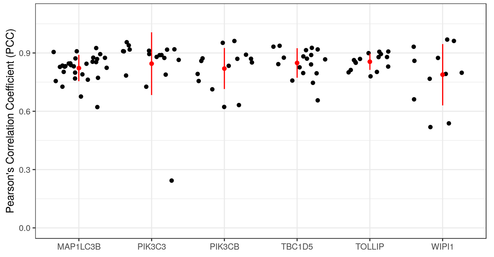
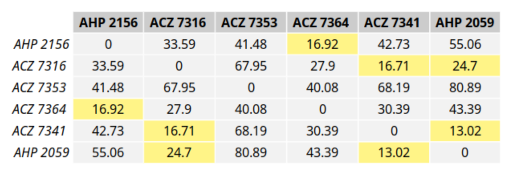
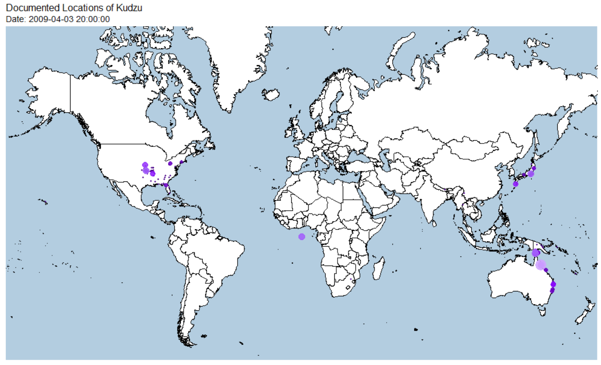
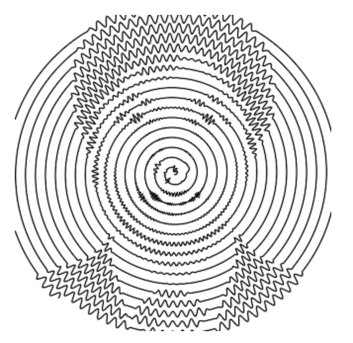

Dec 10, 2018
rOpenSci News is four years old! 🎉 Our first newsletter came out on December 15th, 2014. Check it out at https://news.ropensci.org/update-2014-12-15/. As you can see the newsletter has changed a lot since then. Thanks for reading!
rOpenSci HQ
- We have another community call coming up next week; read the recent blog post by Dan Sholler and Stefanie Butland for all the details: Community Call - Governance strategies for open source research software projects
Software 📦
CRAN:  GitHub:
GitHub: 
New versions
- A new version (
v0.5.2) ofvisdatis on CRAN - create preliminary exploratory data visualisations of an entire dataset to identify problems or unexpected features using ggplot2. See the release notes for changes. Checkout the docs to get started.

fix for
readr - A new version (
v0.3.1) ofaukis on CRAN - eBird data extraction and processing. See the release notes for changes. Checkout the docs to get started.
rlangfixes and change toauk_unique() - A new version (
v0.4.0) ofbrranchingis on CRAN - Fetch Phylogenies from Many Sources. See the release notes for changes. Checkout the vignette to get started.
now using phylocomr for
phylomatic_localandrbladjfxns - A new version (
v1.3.7) ofMODIStspis on CRAN - Automate Download and Preprocessing of MODIS Land Products Data. See the release notes for changes. Checkout the docs to get started.
bug fix for computation of custom spectral indices containing additive parameters
- A new version (
v0.8.0) ofrnoaais on CRAN - NOAA Weather Data from R. See the release notes for changes. Checkout the vignettes to get started.
3 new data sources (& fxns); new fxn
ghcnd_read(); optionally get units forncdc()output - A new version (
v0.5.2) ofhoardris on CRAN - Manage cached files. See the release notes for changes. Checkout the vignette to get started.
important bug fix: now multiple
hoardr()objects in same R session don’t collide - A new version (
v1.1) ofwritexlis on CRAN - a portable, light-weight data frame to xlsx exporter. See the release notes for changes. Checkout the README to get started.
update bundled libxlswriter; don’t write blank xlsx strings for NA and
"" - A new version (
v1.5) ofgraphqlis on CRAN - Bindings to libgraphqlparser for R. See the release notes for changes. Checkout the README to get started.
update bundled libgraphqlpaser
- A new version (
v0.1.2) ofphylocomris on CRAN - Interface to Phylocom for analysis of phylogenetic community structure and character evolution. See the release notes for changes. Checkout the vignette to get started.
bug fix -
ph_phylomatic()wasn’t working with some phylogenies
Software Review ✔
We accept community contributed packages via our onboarding system - an open software review system, sorta like scholarly paper review, but way better. We’ll highlight newly onboarded packages here. A huge thanks to our reviewers, who do a lot of work reviewing (see the blog post on our review system), and the authors of the packages!
If you want to be a reviewer fill out this short form, and we’ll ping you when there’s a submission that fits in your area of expertise.
The following packages recently went through our onboarding process and have been approved!
- wateRinfo > Download Time Series Data from Waterinfo.be
- Author: Stijn Van Hoey
- Issue: ropensci/onboarding#255
- Reviewers:
- rdhs > API Client and Dataset Management for the Demographic and Health Survey (DHS) Data
- Author: OJ Watson
- Issue: ropensci/onboarding#238
- Reviewers:
The following packages were recently submitted:
- stats19 > Work with open road traffic casualty data from Great Britain
- Author: Robin Lovelace
- Issue: ropensci/onboarding#266
- Reviewers:
- lightr > Read Spectrometric Data in R
- Author: Hugo Gruson
- Issue: ropensci/onboarding#267
- Reviewers: not assigned yet
- ramlegacy > Download and Read RAM Legacy Stock Assessment DataBase
- Author: Kshitiz Gupta
- Issue: ropensci/onboarding#264
- Reviewers: not assigned yet
- emld > Ecological Metadata as Linked Data
- Author: Carl Boettiger
- Issue: ropensci/onboarding#269
- Reviewers:
- virtuoso > R interface to Virtuoso using ODBC
- Author: Carl Boettiger
- Issue: ropensci/onboarding#271
- Reviewers: not assigned yet
On the blog
Community
Hoa Ye, Melanie Frazier, Julia Stewart-Lowndes, Carl Beottiger and Noam Ross wrote up a summary of our recent community call on code review in the lab, with links to notes and a recording of the call. Community Call Summary - Code Review in the Lab
Dan Sholler and Stefanie Butland wrote about an upcoming community call: Community Call - Governance strategies for open source research software projects
Software Review
Mahmoud Ahmed wrote about his recently rOpenSci reviewed package colocr, for conducting co-localization analysis of fluorescence microscopy images. Co-localization analysis of fluorescence microscopy images

Alec Robitaille, Quinn Webber, and Eric Vander Wal wrote about their recently rOpenSci reviewed package spatsoc for detecting spatial and temporal groups in GPS relocations. Detecting spatiotemporal groups in relocation data with spatsoc

tech notes
Dom Bennett wrote about his package just gone through rOpenSci review for working with a local copy of GenBank data in R. restez: Query GenBank locally

Scott Chamberlain wrote about a new release of our rnoaa package for working with many NOAA datasets, including a number of new data sets and the addition of units to rnoaa::ncdc() data. rnoaa: new data sources and NCDC units
Use cases
The following 17 works use/cite rOpenSci software:
- Anderson et al. used skimr in their report NZ GREEN Grid Household Electricity Demand Study 1
- Sabatini et al. used rredlist in their paper Trade‐offs between carbon stocks and biodiversity in European temperate forests 2
- Walsh & Cherbuin used fulltext and roadoi in their pre-print Mapping the Literature on Nutritional Interventions in Cognitive Health: A Data-Driven Approach 3
- António et al. used skimr in their paper Hotel booking demand datasets 4
- Aprosio & Moretti used textreuse in their book chapter Tint 2.0: An all-inclusive Suite for NLP in Italian 5
- Borstein et al. used rfishbase in their paper Reef fish functional traits evolve fastest at trophic extremes 6
- Ott et al. used iheatmapr in their paper Enhancer Architecture and Essential Core Regulatory Circuitry of Chronic Lymphocytic Leukemia 7
- White & Santy cited ckanr, rdryad, rfigshare, and rdatacite in their paper DataDepsGenerators.jl: making reusing data easy by automatically generating DataDeps.jl registration code 8
- Soul et al. used plotly in their paper SkeletalVis: An exploration and meta-analysis data portal of cross-species skeletal transcriptomics data 9
- Hanson et al. used rgbif in their paper Conventional methods for enhancing connectivity in conservation planning do not always maintain gene flow 10
- Evans & Nishioka used magick in their paper Accumulation processes of trace metals into Arctic sea ice: distribution of Fe, Mn and Cd associated with ice structure 11
- Sinval et al. used skimr in their paper University student engagement inventory (USEI): Psychometric properties 12
- Pelletier et al. used taxize in their paper Predicting plant conservation priorities on a global scale 13
- Da Silva et al. used taxize in their paper Assessing the Conservation Potential of Fish and Corals in Aquariums Globally 14
- Vidal et al. used rgbif in their paper Impacts of landscape composition, marginality of distribution, soil fertility, and climatic stability on the patterns of woody plant endemism in the Cerrado 15
- Kline et al. used plotly in their paper Multifocal Versus Conventional Unifocal Diverticulitis: A Comparison of Clinical and Transcriptomic Characteristics 16
- Zill used plotly in their thesis Enriching the feature space of transfer learning in user analysis in online social networks 17
In the news
William Chase wrote a blog post using our package rgbif: Animated Species Invasions with rgbif and gganimate. A static map is below - check out the post for the animated maps.

Hiroaki Yutani used our package magick in a nice post about How To Convert A Human To Waves By Magick Package. A static image is below - check out the post for the animated image.

Keep up with rOpenSci
- Mailing list: Sign up with an email address to get this newsletter sent to your inbox -> ropensci.org/#subscribe
- Alternatively, you can subscribe to this newsletter via our XML feed at https://news.ropensci.org/feed.xml or our JSON feed at https://news.ropensci.org/feed.json
- rOpenSci on Twitter: @ropensci
- The rOpenSci blog at ropensci.org/blog - you can subscribe in any RSS aggregator, or manually via https://ropensci.org/feed.xml. We also announce new blog posts on our Twitter account.
Footnotes
-
Anderson, B., Eyers, D., Ford, R., Giraldo Ocampo, D., Peniamina, R., Stephenson, J., … & Jack, M. NZ GREEN Grid Household Electricity Demand Study. http://reshare.ukdataservice.ac.uk/853334/14/NZ_GREEN_GridHouseholdElectricityDemandStudy_HouseholdAttributeData_v1.0.pdf ↩
-
Sabatini, F. M., de Andrade, R. B., Paillet, Y., Ódor, P., Bouget, C., Campagnaro, T., … & Sitzia, T. Trade‐offs between carbon stocks and biodiversity in European temperate forests. Global Change Biology. https://onlinelibrary.wiley.com/doi/full/10.1111/gcb.14503 ↩
-
Walsh, E. I., & Cherbuin, N. (preprint). Mapping the Literature on Nutritional Interventions in Cognitive Health: A Data-Driven Approach. https://www.preprints.org/manuscript/201811.0527/download/final_file ↩
-
António, N., de Almeida, A., & Nunes, L. (2018). Hotel booking demand datasets. Data in Brief. https://doi.org/10.1016/j.dib.2018.11.126 ↩
-
Aprosio, A. P., & Moretti, G. (2018). Tint 2.0: An all-inclusive Suite for NLP in Italian. Proceedings of CLIC-it. http://ceur-ws.org/Vol-2253/paper58.pdf ↩
-
Borstein, S. R., Fordyce, J. A., O’Meara, B. C., Wainwright, P. C., & McGee, M. D. (2018). Reef fish functional traits evolve fastest at trophic extremes. Nature Ecology & Evolution. https://doi.org/10.1038/s41559-018-0725-x ↩
-
Ott, C. J., Federation, A. J., Schwartz, L. S., Kasar, S., Klitgaard, J. L., Lenci, R., … Bradner, J. E. (2018). Enhancer Architecture and Essential Core Regulatory Circuitry of Chronic Lymphocytic Leukemia. Cancer Cell. https://doi.org/10.1016/j.ccell.2018.11.001 ↩
-
White, L., & Santy, S. (2018). DataDepsGenerators.jl: making reusing data easy by automatically generating DataDeps.jl registration code. Journal of Open Source Software, 3(31), 921. https://doi.org/10.21105/joss.00921 ↩
-
Soul, J., Hardingham, T., Boot-Handford, R., & Schwartz, J. M. (2018). SkeletalVis: An exploration and meta-analysis data portal of cross-species skeletal transcriptomics data. Bioinformatics. https://academic.oup.com/bioinformatics/advance-article-pdf/doi/10.1093/bioinformatics/bty947/26770069/bty947.pdf ↩
-
Hanson, J. O., Fuller, R. A., & Rhodes, J. R. (2018). Conventional methods for enhancing connectivity in conservation planning do not always maintain gene flow. Journal of Applied Ecology. https://doi.org/10.1111/1365-2664.13315 ↩
-
Evans, L. K., & Nishioka, J. (2018). Accumulation processes of trace metals into Arctic sea ice: distribution of Fe, Mn and Cd associated with ice structure. Marine Chemistry. https://doi.org/10.1016/j.marchem.2018.11.011 ↩
-
Sinval, J., Casanova, J. R., Marôco, J., & Almeida, L. S. (2018). University student engagement inventory (USEI): Psychometric properties. Current Psychology. https://doi.org/10.1007/s12144-018-0082-6 ↩
-
Pelletier, T. A., Carstens, B. C., Tank, D. C., Sullivan, J., & Espíndola, A. (2018). Predicting plant conservation priorities on a global scale. Proceedings of the National Academy of Sciences, 201804098. https://doi.org/10.1073/pnas.1804098115 ↩
-
Da Silva, R., Pearce Kelly, P., Zimmerman, B., Knott, M., Foden, W., & Conde, D. A. (2018). Assessing the Conservation Potential of Fish and Corals in Aquariums Globally. Journal for Nature Conservation. https://doi.org/10.1016/j.jnc.2018.12.001 ↩
-
Vidal, J. de D., de Souza, A. P., & Koch, I. (2018). Impacts of landscape composition, marginality of distribution, soil fertility, and climatic stability on the patterns of woody plant endemism in the Cerrado. https://doi.org/10.1101/362475 ↩
-
Kline, B. P., Schieffer, K. M., Choi, C. S., Connelly, T., Chen, J., Harris, L., … Koltun, W. A. (2018). Multifocal Versus Conventional Unifocal Diverticulitis: A Comparison of Clinical and Transcriptomic Characteristics. Digestive Diseases and Sciences. https://doi.org/10.1007/s10620-018-5403-y ↩
-
Zill, B. (2018). Enriching the feature space of transfer learning in user analysis in online social networks. Thesis. Universität Koblenz-Landau. https://kola.opus.hbz-nrw.de/opus45-kola/frontdoor/index/index/docId/1763 ↩